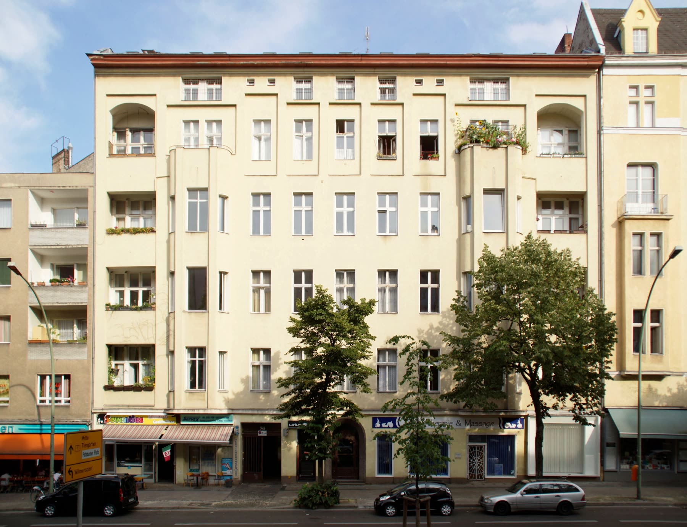
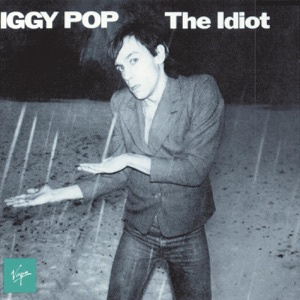
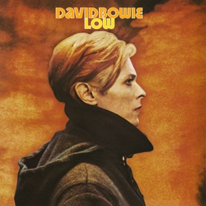
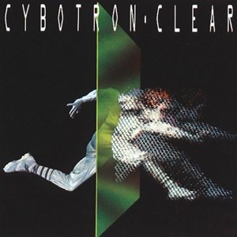
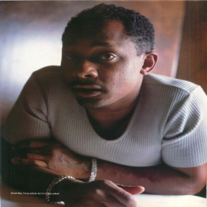
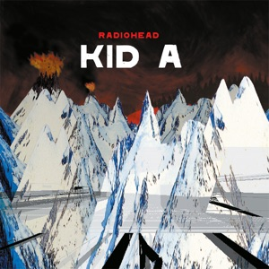

An Englishman flees to Berlin
In 1976 David Bowie was one of the biggest pop stars in the world, and he was in a bad way. He lived in Los Angeles, used a lot of cocaine, ate almost nothing and hardly slept. He wanted out. In the autumn of that year he moved to West Berlin, together with his friend, the singer Iggy Pop. They rented a flat on the Hauptstraße in the Schöneberg district, above a car parts shop.

Photo: Detmar Owen · CC BY-SA 3.0Why Berlin of all places? Nobody there knew them or bothered them. The city was walled in by the Wall, half forgotten and cheap. And Bowie had been listening to the new German music for years. He played Neu!, Kraftwerk, Harmonia and Tangerine Dream, and he wanted to know how you make music like that.
First he helped Iggy Pop with a new album. The Idiot was recorded partly in France and finished in Berlin. It sounds cold and mechanical, with drums that do not swing but stomp.

A simple drum machine, a dragging piano and Iggy Pop sounding as if he is still roaming the clubs at four in the morning. Grace Jones later recorded it for her album of the same name.
Low and Heroes
Then it was Bowie's own turn. Together with the English musician Brian Eno and the producer Tony Visconti he made Low, which came out in January 1977. The first side consists of short, nervous songs. The second side has almost no lyrics: long, slow pieces with synthesizers that sound like a grey city in winter. Bowie wrote Warszawa after a train journey through Poland.

Brian Eno wrote the basis of this piece. Halfway through Bowie sings in a language that does not exist, like a choir in a church. Music like this had never been on a pop star's record before.
Later that year Bowie recorded Heroes at the Hansa studio in Berlin, in a room with a window looking out on the Wall. That album includes a tribute to Florian Schneider of Kraftwerk: V-2 Schneider, named after the rocket and after the man. Kraftwerk answered in their own way. In Trans Europa Express they sing about a train journey from station to station, after which they meet Iggy Pop and David Bowie in Düsseldorf.

The rhythm rolls on like a train, with a saxophone that Bowie plays himself. The title is a pun: the V2 was a German rocket, and Schneider was the flautist of Kraftwerk.
The English and American public were surprised and sometimes angry. Where had the hits gone? But young musicians listened closely. Joy Division, Ultravox, Gary Numan, The Human League and Depeche Mode: many new wave bands found their sound in Bowie's Berlin records, and through those records in the music from Düsseldorf and Cologne.
A German train in the Bronx
Thousands of kilometres away, young Black people in New York and Detroit heard Kraftwerk on the radio. It sounded strange and cool, but you could dance to it very well. In 1982 the DJ Afrika Bambaataa from the Bronx made the song Planet Rock with the Soulsonic Force. He used the melody of Trans Europa Express and the rhythm of Nummern, another Kraftwerk piece, and put a rapper over it. Kraftwerk itself had not given permission and later received money from the proceeds.
Can you hear the melody of the train from Düsseldorf? Here it becomes an electronic party. Planet Rock laid the foundations for electro, and hip hop would keep borrowing from it for years.
Funk and a sequencer in a lift
In Detroit, the city of the car industry and of Motown, the radio presenter Charles Johnson, who called himself The Electrifying Mojo, played music every evening that could be heard nowhere else. Kraftwerk stood next to Prince and George Clinton. One of his listeners was the young Juan Atkins. He first heard Kraftwerk on Mojo's programme and wanted to make music with machines, but with the funk of his own city.
Together with Rick Davis, Atkins founded the group Cybotron. In 1983 their song Clear came out. Detroit was a city in decline then: the car factories were closing and whole neighbourhoods were emptying. Atkins's music sounded like a dream of a future that was not coming to Detroit.

It sounds like Kraftwerk, but with funk in the bass line. Clear became an electro classic and has often been sampled since, by Missy Elliott among others.
Atkins had two friends from school: Derrick May and Kevin Saunderson. Together they became known as The Belleville Three, after the town near Detroit where they grew up. They made a new kind of dance music, which they called techno. May later called it a mistake: two worlds that happened to collide.
Techno is like George Clinton and Kraftwerk stuck in a lift together, with only a sequencer for company.Derrick May

No synthesizer that sounds like a machine, but strings and a piano on a driving rhythm. Derrick May made an anthem of the dance floor with it.
Back to Berlin
In the late 1980s techno came back from Detroit to Europe, and above all to Berlin. After the fall of the Wall, in November 1989, the east of the city was full of empty factories, cellars and bunkers. Clubs such as Tresor arose there, in the vault of an old department store. The Love Parade, which began in July 1989 with a few hundred people, grew into a party with a million visitors. The techno that had been made in Detroit out of German music became the soundtrack of reunited Germany.
Hipper than ever
In 2000 Radiohead surprised its fans with Kid A. Where were the guitars? Thom Yorke and his band had been listening to electronic music and to Can. On The National Anthem a single bass line circles endlessly, as with Can, while more and more sound builds up around it.

Thom Yorke came up with the bass line when he was sixteen. Hear how the song falls apart when the brass comes in, like a big band that has lost its way.
Fifty years after the first records by Can, Neu! and Kraftwerk, krautrock is more sought after than ever. Old records are reissued, and in museums such as MoMA in New York and the Tate in London Kraftwerk played its entire catalogue. The young people who wanted to start from zero in 1968 wanted a German music that was not about the past. They made music about the future. And that future, with computers, robots and dance floors full of electronic music, is now.